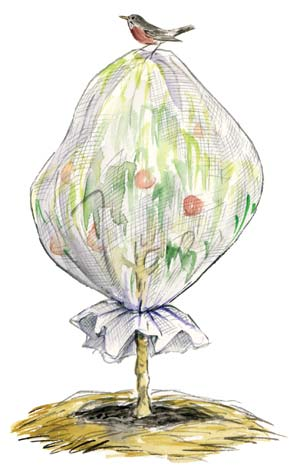

ELAYNE SEARS
Ripening fruit is a tempting treat for birds and squirrels. You can prevent losses by covering your tree with a layer of tulle netting, gathering and securing it around the trunk of the tree.